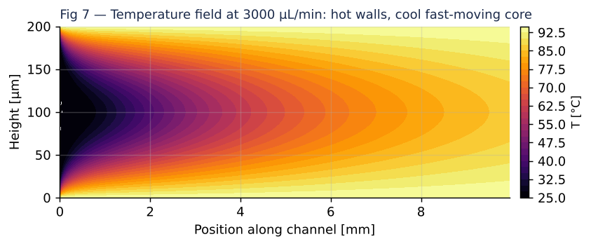
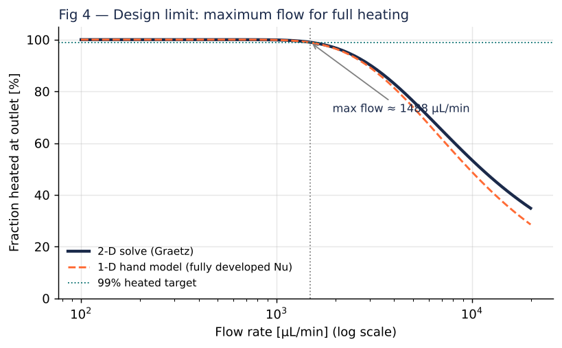
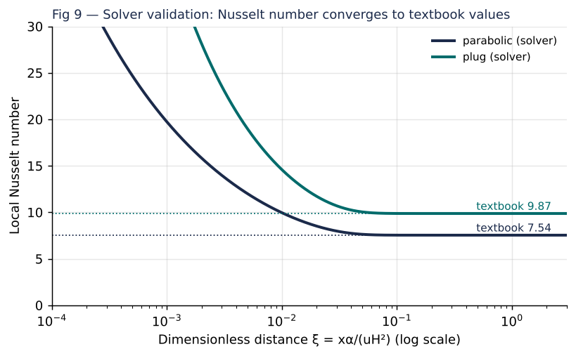

I design, build and test hardware for medical diagnostics, and I like working problems from first principles: thermal and fluid analysis, test rigs, and finding out why things fail.
Flow and heat transfer in a microfluidic PCR channel
How fast can you pump fluid through a heated microchannel before it leaves under temperature?
A Python model of a 10 × 2 × 0.2 mm channel, built from first principles. At this scale the flow is laminar, so the velocity profile is a parabola and heat only reaches the centre by conduction. That makes it the classic Graetz problem, which I solved numerically with a Crank–Nicolson scheme and checked against textbook and published results.
~1,490µL/min max flow for 99% heating
7.540Nusselt number vs textbook 7.541
88 spredicted run time vs 90 s published (Kopp et al., 1998), using an inferred channel profile
+34%overestimate if you assume uniform flow

Temperature field at 3,000 µL/min. The slow fluid near the walls heats first; the fast core lags behind.

The design limit: maximum flow for full heating.

Validation: the solver reproduces the textbook Nusselt numbers.
What I learned
My first version assumed a wall heat-transfer coefficient of 800 W/m²K. Deriving it properly from the Nusselt number gave about 11,700, which moved the flow limit from 112 to about 1,490 µL/min. Checking assumptions against something independent is now the first thing I do.
Halving the channel height doubles the maximum flow but costs eight times the pressure. The useful answer is usually a trade-off, not a single number.
Limitations: walls held at a fixed temperature, side walls ignored, no bench data yet. Next step: calibrate against measured instrument data.
Medical device R&D: test rigs, tooling and failure investigation
Consultant Engineer, R&D at Diagnostics for the Real World, since March 2025
Hardware development for a molecular diagnostic platform, working under ISO 13485 and MDSAP.
Temperature test rig: designed and built a rig to characterise instrument temperatures, covering sensor choice, placement, calibration and logging.
AMP removal tool: designed and built a tool for removing a component safely and repeatably, from concept through iterations to use.
Failure investigation: reproduce failures at component and sub-assembly level, isolate the root cause, and feed fixes back into the design through FMEA.
Details and data are confidential, so this section describes the approach rather than results.
Sentinel: a pre-registered test of news sentiment
Does the mood of financial headlines predict the next day's market? A test designed to be able to say no.
A system I built and ran on AWS that scored about 96,500 headlines and compared them with real market moves. I fixed the metric, data split and decision rules before seeing results. The standard sentiment model's signal turned out to run backwards, but the forward test (51 trading days) could not show the effect was real.
The engineering lesson
At least five monitors reported "all clear" while the thing they measured was broken. The fix each time: measure what you actually care about, not something that usually moves with it. The same applies to test rigs and device software.